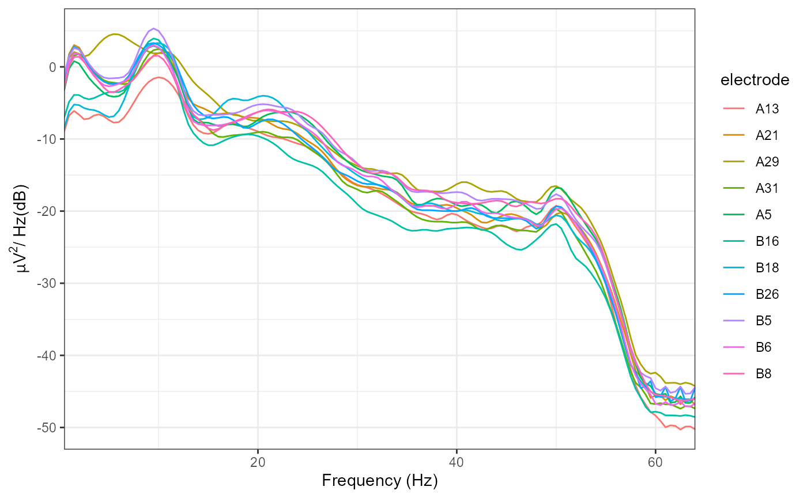

Frequency analysis
Matt Craddock
2018-12-31
Source:vignettes/time-frequency-analysis.Rmd
time-frequency-analysis.RmdPeriodicity is commonly observed in EEG signals. For example, oscillations in the alpha frequency range (approximately 8-13 Hz) were one of the first signals observed in the human EEG. One method of analysing this periodicity is to calculate the Power Spectral Density using a method such as Welch’s FFT.
In eegUtils, this can be achieved using compute_psd() and plot_psd(). With epoched data, compute_psd() calculates the PSD for each trial separately. compute_psd() returns a data.frame with spectral power at each resolved frequency and for each electrode. Note that plot_psd() can be called directly on eeg_data or eeg_epochs objects without first having to compute_psd(). With epoched data, it will average over epochs before plotting.
library(eegUtils)
#> Make sure to check for the latest development version at https://github.com/craddm/eegUtils!
#>
#> Attaching package: 'eegUtils'
#> The following object is masked from 'package:stats':
#>
#> filter
demo_psd <- compute_psd(demo_epochs)
plot_psd(demo_epochs)
Time-frequency analysis
Frequency analysis necessarily discards temporal information. One problem is that it assumes stationarity - that the signal remains stable in terms of frequency and power across the whole analysed time window. However, this is rarely the case with EEG data;
Time-frequency analysis is a method of accounting for non-stationarity by decomposing the signal using a moving-window analysis, tiling the time-frequency space to resolve power over relatively shorter time-windows.
In eegUtils, compute_tfr() can be used to calculate a time-frequency representation of eeg_epochs(). Currently, this is achieved using Morlet wavelets. Morlet wavelets are used to window the signal, controlling spectral leakage and time-frequency specificity. Morlet wavelets have a user-defined temporal extent, which in turn determines the frequency extent. We define the temporal extent of our wavelets by cycles; we define it as an integer number of cycles at each frequency of interest.
demo_tfr <- compute_tfr(demo_epochs,
method = "morlet",
foi = c(4, 30),
n_freq = 12,
n_cycles = 3)
demo_tfr
#> Epoched EEG TFR data
#>
#> Frequency range : 4 6.363636 8.727273 11.09091 13.45455 15.81818 18.18182 20.54545 22.90909 25.27273 27.63636 30
#> Number of channels : 11
#> Electrode names : A5 A13 A21 A29 A31 B5 B6 B8 B16 B18 B26
#> Number of epochs : None, averaged.
#> Epoch limits : -0.1972656 - 0.4511719 seconds
#> Sampling rate : 128 HzNote that the characteristics of the wavelets, in terms of temporal and frequency standard deviations, are stored inside the object:
demo_tfr$freq_info$morlet_resolution
#> sigma_f sigma_t
#> 1 1.333333 0.11936621
#> 2 2.121212 0.07503019
#> 3 2.909091 0.05470951
#> 4 3.696970 0.04305011
#> 5 4.484848 0.03548725
#> 6 5.272727 0.03018456
#> 7 6.060606 0.02626057
#> 8 6.848485 0.02323944
#> 9 7.636364 0.02084172
#> 10 8.424242 0.01889249
#> 11 9.212121 0.01727669
#> 12 10.000000 0.01591549The results of the time-frequency transformation can be plotted using the plot_tfr() function.

Baseline correction is common in the literature. Several different methods are possible, both for plotting only, and as a modification to the object using rm_baseline.